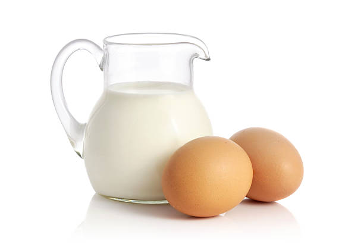
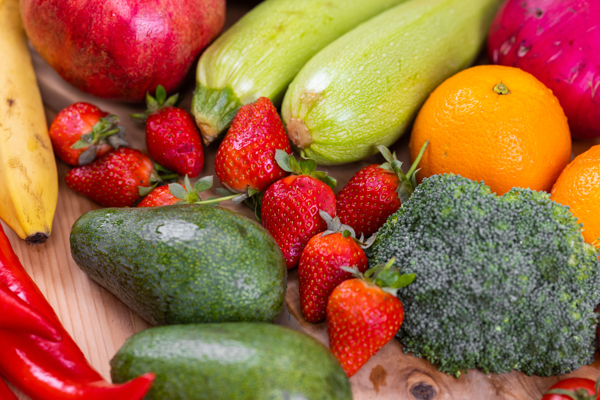
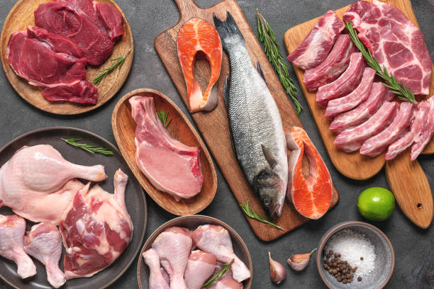
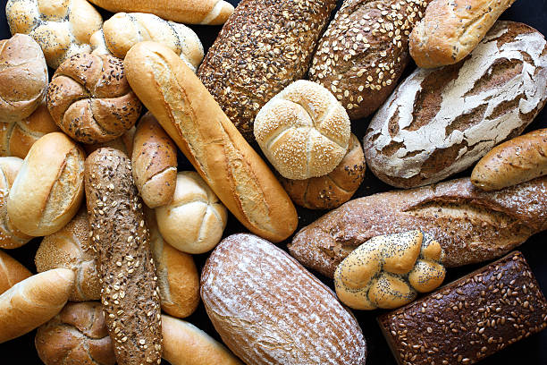

Productos: cómo conservarlos
Muchos alimentos se tiran porque se guardan mal. Aquí tienes, para cada producto, dónde guardarlo, cuánto dura una vez abierto y un consejo para que aguante más.
Lácteos y huevos

- Leche
- Se guarda en la nevera, mejor en un estante que en la puerta, porque es la zona menos fría. Una vez abierta dura 3 o 4 días, y si sobra se puede congelar.
- Yogur
- Va en la nevera. Suele llevar fecha de consumo preferente: pasada esa fecha, si el envase no está hinchado y huele normal, todavía se puede tomar.
- Queso curado
- Se guarda en la nevera envuelto en papel y no en plástico, para que respire. Una vez abierto aguanta varias semanas.
- Huevos
- Van en la nevera, dentro de su caja. Es mejor no lavarlos hasta el momento de usarlos.
Frutas y verduras

- Plátanos
- Fuera de la nevera y separados de otras frutas, porque hacen que maduren antes. Si se ponen muy maduros, sirven para un batido o un bizcocho, o se pueden congelar pelados.
- Tomates
- Mejor fuera de la nevera, porque el frío les quita sabor.
- Lechuga y hojas verdes
- En el cajón de la nevera, con un papel de cocina que absorba la humedad. Así duran entre 3 y 5 días.
- Patatas
- En un lugar fresco, seco y oscuro, y separadas de las cebollas.
Carne, pescado y sobras

- Carne fresca
- En la parte de abajo de la nevera, que es la más fría. Dura 1 o 2 días, así que si no la vas a usar, congélala el mismo día que la compras.
- Pescado fresco
- En la nevera, bien tapado. Hay que consumirlo en 1 o 2 días.
- Sobras de comida
- En la nevera, en un recipiente cerrado, y se consumen en 3 o 4 días. No las dejes fuera más de 2 horas antes de guardarlas.
Pan y alimentos secos

- Pan
- En una bolsa de tela y fuera de la nevera, porque en el frío se pone duro antes. Si sobra, se puede cortar en rebanadas y congelar.
- Arroz, pasta y legumbres
- En botes cerrados y en un lugar seco.
- Aceite
- Lejos de la luz y del calor: por ejemplo, no al lado de los fogones.